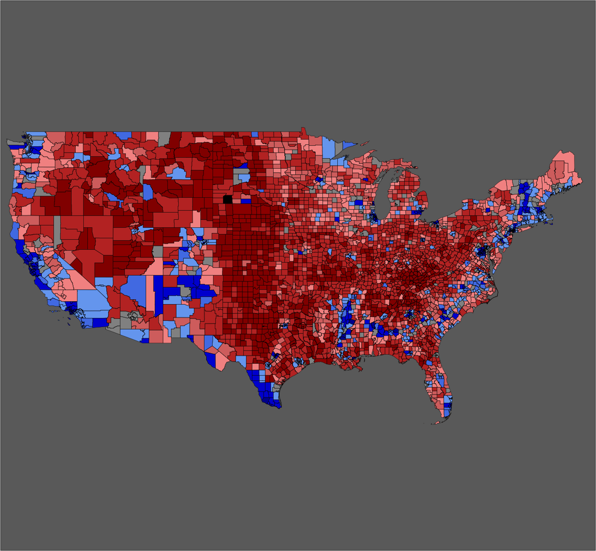

COVID-19 Mask Use & Voting Patterns
Currently working on analyzing covid mask use data collected by the New York Times (find it here) and county voting data from the 2016 presidentail election (MIT Election Lab) to analyze the correlation between the two.
M67 - in color
Raw images were taken at Whipple Observatory in Arizona with a class, this image was created using ImageJ and the fits files in i,g, and r filters. Notice that the image is divided into 4 different sections during the read out process from the CCD, each section has its own biases and flats. While the distiction may seem large in the final image, the pixel values don't vary by more than .001 between the regions. Click here to view the image full size. Click here to download the fits files.